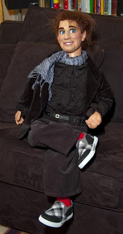

Randy Rivet, Uber-Fashionista
4/16/2010
{kind=link}

From Rick Johnson
{kind=link}
Hi Clinton, I received "Eli" safe and sound a few weeks ago and he and I have been getting acquainted. Your experience and talent are so apparent in how you bring everything together. The "look" is just what I hoped for. Thanks to the attention to shadowing, including the beard stipple, which is just enough to suggest his style and age.
The young adult look really worked on him! I'm fashioning him after one of the characters on the Project Runway show. Then, he can be as outrageous and narcissistic as he wants.
Now known as "Randy Rivet", he is still unhappy with his wardrobe. He has a velvet black blazer that doesn't show well in the photos but he insists that as a Project Runway "designer" he's GOT to have his black on. . . And his scarf and just a touch of color in the red socks. He really thinks I'm old and tired, and let's me hear about it anytime he can skewer me with his rapid repartee. He's at that self-absorbed "world-is-his-oyster" stage, so he's oblivious to how the rest of the world see him. He just enjoys always thinking he's right, but he's just not bright enough to pull it off. When he gets tired of the fashion world he wants to direct a music video, or perhaps perform on Broadway.
This is an interesting project. The voice I developed for him before he arrived is now evolving into HIS voice. The personality I had pre-conceived is evolving, too. As many have written on the WorldVents list, it is important to have all of that figured out before you select and buy a new figure, but it's also important to realize that once he's at your side and you're having a conversation with him (or her) your pre-conceptions may give way to the personality that emerges once you're interacting. I know that his name will come to me in the same way.
I'm sure a psychotherapist would have some interesting observations about this process and the interpersonal dynamics between a vent and a dummy. I've been told by a psychiatrist friend that it is good psychotherapeutic practice to talk with the dummy who knows you best, and to discuss what's going on in your life, challenges, frustrations, etc. Puppet play like this is sometimes used with children. After all, in psychotherapy you're saying things out loud so that you can hear listen to yourself and sort things out. Doing this with a dummy can have surprisingly helpful results, because your dummy will have plenty to say and will offer lots of feedback. After all, who knows you better?